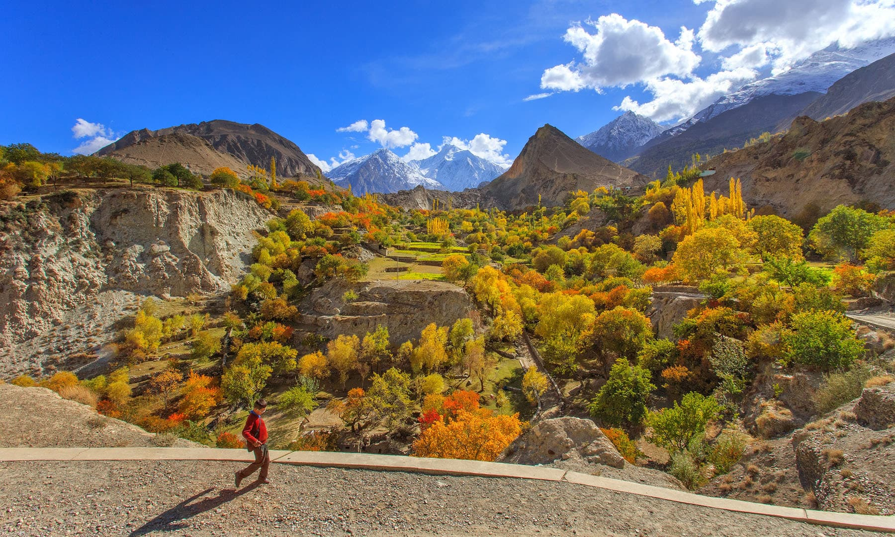

<div class="portfolio-single-load clearfix">
    <div class="custom-full-width-box">
        <div class="custom-container">
            <div class="custom-row align-items-center">
                <div class="custom-image-column">
                    
                </div>
                <div class="custom-text-column">
                    <h2 class="custom-heading">Nagar Valley</h2>
                    <p class="custom-paragraph">
                        Nestled amidst the majestic mountains of the Gilgit-Baltistan region in northern Pakistan, is a hidden gem waiting to be discovered. Renowned for its pristine beauty, rich cultural heritage, and towering peaks, Nagar Valley offers a mesmerizing retreat for travelers seeking an authentic mountain experience.
                        <br><br>
Home to several prominent peaks, including the iconic Rakaposhi (7,788 meters), Ultar Sar (7,388 meters), and Diran (7,266 meters), Nagar Valley boasts some of the highest and most breathtaking summits in the Karakoram Range. These towering peaks dominate the skyline and provide a stunning backdrop to the valley, offering spectacular vistas that captivate the imagination.
<br><br>
In addition to its awe-inspiring peaks, Nagar Valley is adorned with verdant valleys, crystal-clear streams, and lush forests teeming with diverse flora and fauna. The valley's picturesque landscape provides an idyllic setting for trekking, mountaineering, and outdoor adventures, attracting adventurers from around the world.
<br><br>
Nagar Valley is also steeped in history and culture, with ancient traditions that have been preserved for centuries. Visitors can explore historic sites such as the Altit Fort and Baltit Fort, which offer insights into the region's rich heritage and architectural marvels.
<br><br>
The warmth and hospitality of the local communities add to the charm of Nagar Valley, welcoming travelers with open arms and offering a glimpse into their unique way of life. Whether trekking through its rugged terrain, marveling at its majestic peaks, or immersing oneself in its vibrant culture, Nagar Valley promises an unforgettable journey into the heart of the Karakoram.

                    </p>
                </div>
            </div>
        </div>
    </div><!-- .custom-full-width-box end -->

</div><!-- end single-project -->
